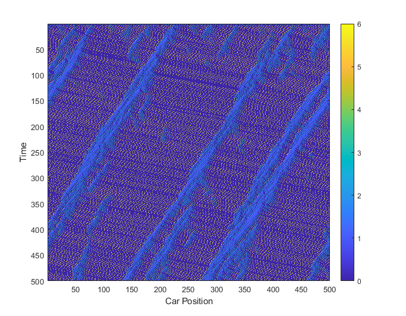

Cellular Automata
This project was based on a 'Cellular Automaton' model for freeway traffic, as described by K. Nagel & M. Schreckenberg in their 1992 paper of the same name . The model is a very simple representation of a real-world freeway, where cars (modelled as single ‘cells’) follow a strict set of rules for their evolution along the road. Despite the high level of abstraction, a monte carlo simulation of the model can be used to demonstrate relationships between variables of the road that are observed in real life. In particular, a relationship between the density of cars on the road and the total bulk movement of cars over time (termed the flow) can be observed. The relationship implies that the potential total flow of the road is maximised for a given 'critical density', above which the road is too congested, and below which there not enough cars contributing to the flow. This is not a trivial result, and demonstrates the model’s surprisingly powerful predictive capability.
For a project in my 2nd Year of my Physics Degree, I wrote MATLAB programs to reproduce the main results found by Nagel & Schreckenberg, and attempted to extend the work to include additional variables. I looked at the effects of excessively fast/slow drivers on the system, as the initial model assumes all cars will attempt to reach the speed limit of the road, and go no further.
The Model
The cellular automaton model assumes cars to occupy single ‘cells’, defined on discrete intervals along the road, which update their positions in discrete time steps. The cars all have some speed \(v\), and every time step, they move v cells forwards. All the cars start with some initial speed, and this speed changes each time step according to the following simple rules:
- Acceleration: If it won't hit another car, and is not travelling at the speed limit, a car will accelerate to \(v = v + 1\)
- Conscious Deceleration: If it will hit another car at the speed it is currently travelling, it will decelerate sufficiently to stay at least one cell behind it
- Random Deceleration: With a given probability (which is varied during the experiment), the car will deceletate by a speed of 1
The space-time representation of the road as given by Nagel & Schreckenberg.
The road itself is modelled as one lane comprising \(N\) cells and \(n\) cars, which wraps onto itself (so cars leaving the end of the road rejoin at the start).
To represent the evolution of road, a space-time representation is used.
Each row of the graph represents the entire road at a certain time step, and evolves downwards with each time step.
Each cell with a car is filled in with its current speed.
The next time step down, you can see that it has advanced a number of cells according to whatever its speed is, and accelerated or decelerated according to the ruleset.
The closed nature of the road (meaning no cars can enter or leave) means we are fixing its density, \(\rho\), which we will define as:
\[\rho = {\text{number of cars on the road} \over \text{number of cells on the road}} = {n \over N}.\]
This is deliberate, as the main aim of the model will be to examine the effects that a given density has on the overall flow of the road.
The flow, \(Q\) is a measure of the total movement of the cars along the road, averaged over the whole simulation, and is given by
\[Q = {\Sigma_{i,j} v_{i,j} \over T},\]
where \(v_{i,j}\) is the velocity of car \(i\) at time step \(j\), and \(T\) is the total number of time steps.
Implementation
Two main programs were written for my original implementation - both in MATLAB. The first generated space-time graphs for a single instance of the simulation, and the following core variables could be edited:
- \(T\) - The total number of time steps to run the simulation for
- \(N\) - The length of the road, in terms of the number of cells
- pSlowdown - The probability that any given car will slow down on any time step
The program also calculated the time-averaged flow, as well as the density of the cars along the road for reference. Later, I extended the program to include the possibility of excessively slow or fast drivers on the road. These drivers would effectively have their speed limits changed, so they would stop accelerating before they hit the speed limit, or keep going afterwards. This introduced the following two parameters to the system:

Space-time graph for pSlowdown=0.2, \(N\)=500,
\(T\)=500, pSpeedChange = 0.
- pSpeedChange - The probability that any given car will have a speed limit faster or slower than the average
- maxSpeedChange - The maximum number of speed units that the speed limits can be altered by (in either direction)
By experimenting with the parameters in the first program, it is obvious that the density of the road and the flow are related in some way, for any given pSlowdown. The second program attempts to examine the relationship in a more explicit way, running multiple runs of the experiment for different density values at given slowdown probabilities. It then plots the two values for comparison. With this, we can also edit the variables from the extension, to examine what effect (if any) they have on this relationship.
The Results
The flow-density relationship for pSlowdown = 0, 0.2, 0.4, 0.6 & 0.8.
\(N\) = 100, \(T\)=50, Q averaged over 100 simulations for each data point.
Ultimately, I was able to demonstrate the same relationship between flow & density as Nagel & Schreckenberg. If we take pSlowdown to be 0, we find the critical density to be at 0.18 precisely.
As pSlowdown increases towards 1, we see the amplitude of the graph decreasing, as would be expected if cars are generally moving slower.
Additionally, the position of the ampitude moves further to the left, as well as having a less distinct relationship with the surrounding points.